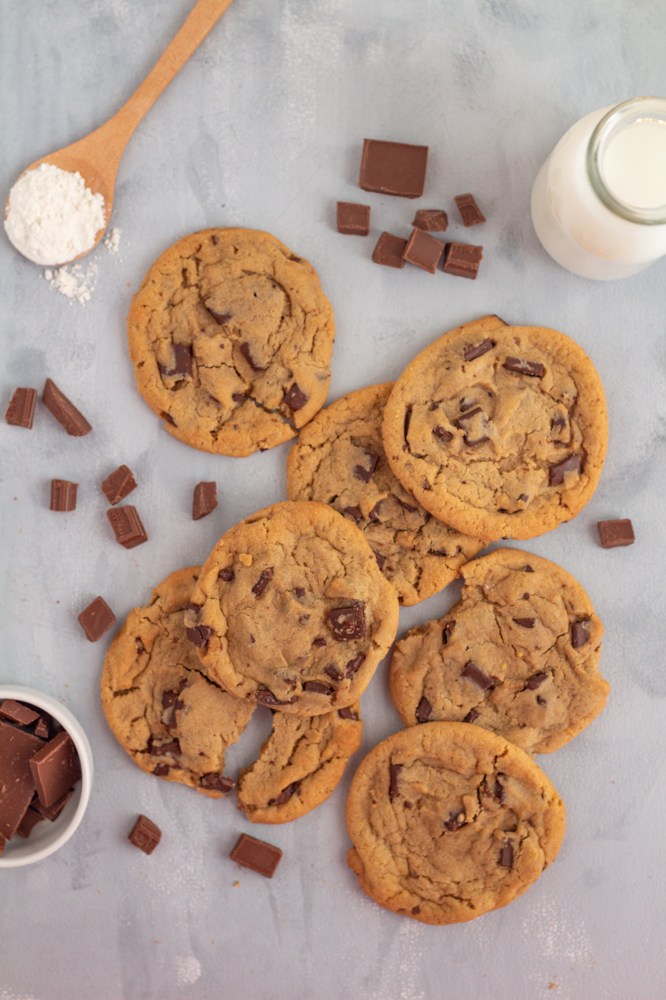

Peanut Butter Bacon Bourbon Chocolate Chip Cookies

Description:
If there was only ONE cookie that I could have for the rest of my life, it would be this cookie.
The rich dark chocolate pairs with the sweet of the creamy peanut butter. The salty bacon pairs well with the rich vanilla notes of the bourbon making it one well rounded cookie.
These cookies are the perfect desert to have with our Bucatini Con Piselli and Focaccia Bread
Makes about 2 dozen cookies
What You Need:
- 1 1/4 cup all-purpose flour
- 1/4 tsp baking soda
- 1/4 tsp baking powder
- 1/4 tsp salt
- 6 strips bacon
- 1/2 stick butter, room temperature
- 1/2 cup creamy peanut butter, melted
- 1/2 cup granulated sugar
- 1/2 cup dark brown sugar, packed
- 1 large egg
- 2 1/2 tbsp bourbon
- 1/3 cup dark chocolate chunks
How You Make Them:
- Preheat the oven to 350 degrees farenheight. Line two 9x13-inch baking sheets with parchment paper
- In a large mixing bowl, combine the flour, baking soda,baking powder,and salt. Mix together with a fork until well blended
- In a large heavy-bottomed pan over medium-high heat, cook the bacon until crisp, (about 3 to 4 minutes each side), Let the bacon cool and drain. Reserve about 2 tbsp of bacon grease and set aside
- Combine the butter and bacon grease in the bowl of a stand mixer and mix on medium speed utnil smooth (about 1 minute).
- Beat in the melted peanut butter until well blended, (about 1 minute)
- Beat in the sugars until creamy, (about 3 minutes),then add the egg and bourbon and beat until light and fluffy, (about 3 more minutes)
- A little at a time, add the flour mixture and beat until just combined, (about 1 or 2 minutes)
- Once the bacon has cooled, crumble it into small bits. Using a rubber spatula fold in the crumbled bacon and chocolate chips into the dough
- Using a scoop or your hands form 1 inch balls of the cookie dough, arrange them about 2 inches apart on the baking sheets
- Bake for about 8 to 10 minutes, or until the edges crisp and the tops look golden brown but aren't quite set
- Remove from the oven, set the baking sheets on wire racks to cool for about 5 minutes, then transfer cookies to the racks to cool for about 10 more minutes
Store in the refridgerator, in a tightly lidded plastic conatiner or tin, for up to 1 week